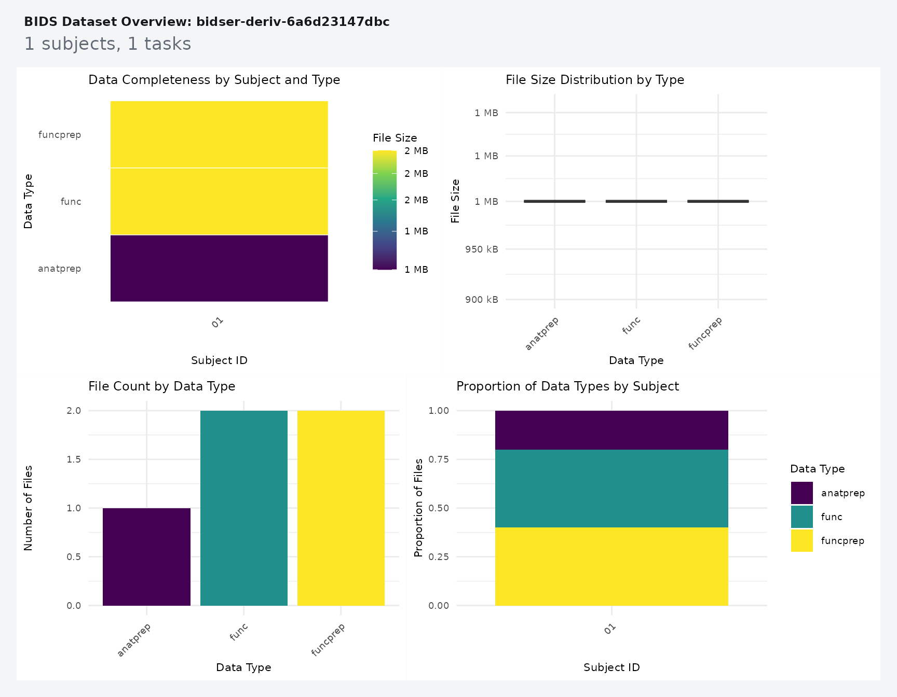
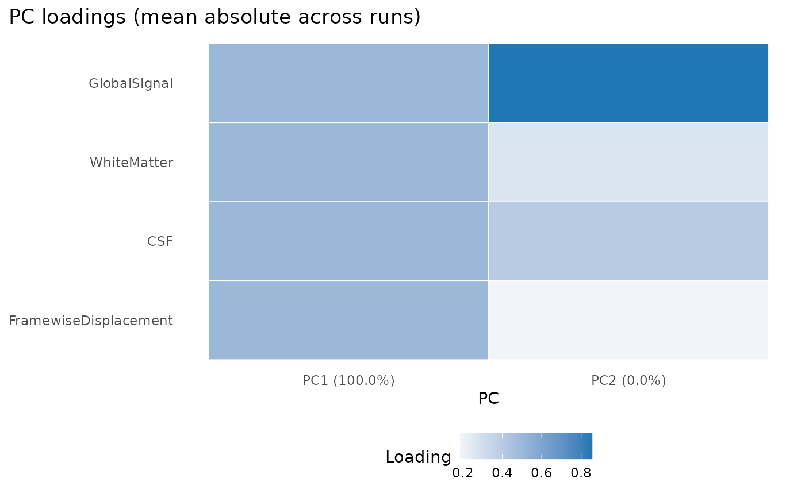

When a BIDS project already has derivatives, the first job is usually not data loading. It is figuring out which pipeline produced which files, whether the expected confounds are present, and whether each run is analysis-ready.
This vignette uses a tiny local project so the full workflow is
runnable without downloading example data. For raw-project discovery,
start with vignette("quickstart").
Where are the derivatives?
Use plot_bids() to get a fast overview of the raw
project plus attached derivative folders.
plot_bids(proj, interactive = FALSE)
For code, derivative_pipelines() is the clearest
inspection entry point.
pipes <- derivative_pipelines(proj)
pipes
#> # A tibble: 2 × 4
#> pipeline root description source
#> <chr> <chr> <list> <chr>
#> 1 fmriprep derivatives/fmriprep <bds_dts_> discovered
#> 2 qsiprep derivatives/qsiprep <bds_dts_> discovered
stopifnot(
nrow(pipes) == 2L,
all(c("fmriprep", "qsiprep") %in% pipes$pipeline)
)The fixture has two derivative roots, but only one of them contains functional preprocessed BOLD data. That is the pipeline you want to target in the next query.
How do you pull one derivative run?
Use query_files() when you want explicit scope and
pipeline control.
prep_bold <- query_files(
proj,
regex = "bold\\.nii\\.gz$",
scope = "derivatives",
pipeline = "fmriprep",
desc = "preproc",
return = "tibble"
)
prep_bold[, c("path", "scope", "pipeline")]
#> # A tibble: 1 × 3
#> path scope pipeline
#> <chr> <chr> <chr>
#> 1 derivatives/fmriprep/sub-01/func/sub-01_task-rest_run-01_space… deri… fmriprep
stopifnot(
nrow(prep_bold) == 1L,
identical(prep_bold$scope[[1]], "derivatives"),
identical(prep_bold$pipeline[[1]], "fmriprep")
)That query stays readable because each filter answers one question: which file suffix, which scope, and which pipeline.
How do you read and check confounds?
read_confounds() reads the derivative table and returns
a tibble that stays indexed by subject, task, run, and session.
confounds_flat <- read_confounds(
proj,
subid = "01",
task = "rest",
nest = FALSE
)
confounds_flat
#> # A tibble: 4 × 8
#> CSF WhiteMatter GlobalSignal FramewiseDisplacement participant_id task
#> <dbl> <dbl> <dbl> <dbl> <chr> <chr>
#> 1 0.1 0.4 1 0.01 01 rest
#> 2 0.2 0.5 1.1 0.02 01 rest
#> 3 0.3 0.6 1.2 0.03 01 rest
#> 4 0.2 0.5 1.1 0.02 01 rest
#> # ℹ 2 more variables: run <chr>, session <chr>
stopifnot(
nrow(confounds_flat) == 4L,
all(is.finite(confounds_flat$FramewiseDisplacement)),
max(confounds_flat$FramewiseDisplacement) < 0.05
)If you want a compact diagnostic view, ask for principal components and plot them.
confounds_pca <- read_confounds(
proj,
subid = "01",
task = "rest",
npcs = 2
)
plot(confounds_pca, view = "aggregate")
The plot is most useful as a quick failure check: if the confounds are missing, degenerate, or wildly scaled, the PCA summary becomes obviously suspicious.
How do you verify run-level coverage?
variables_table() pulls scans, events, and confounds
into one run-level tibble without forcing you to manage separate
joins.
run_variables <- variables_table(
proj,
scope = "all",
pipeline = "fmriprep"
)
run_variables[, c(".subid", ".task", ".run", "n_scans", "n_events", "n_confound_rows")]
#> # A tibble: 1 × 6
#> .subid .task .run n_scans n_events n_confound_rows
#> <chr> <chr> <chr> <int> <int> <int>
#> 1 01 rest 01 1 1 4
stopifnot(
run_variables$n_scans[[1]] == 1L,
run_variables$n_events[[1]] == 1L,
run_variables$n_confound_rows[[1]] == 4L
)That table is a practical checkpoint before model fitting because it shows whether each run has the pieces you expect.
How do you turn that into a report?
bids_report() wraps the same run-level coverage into a
compact text report.
report <- bids_report(
proj,
scope = "all",
pipeline = "fmriprep"
)
report
#> BIDS Report
#> Project: bidser-deriv-6a6d23147dbc
#> Participants source: file
#> Subjects: 1
#> Sessions: 0
#> Tasks: rest
#> Total runs: 1
#> Compliance: passed
#> Index: available
#> Pipelines: fmriprep, qsiprep
#> Indexed runs: 1Next Steps
Use vignette("quickstart") for raw BIDS inspection and
vignette("mock-bids") when you need a fully local project
for tests, demos, or packaging workflows.